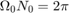

Practica 5 Series de Fourier
Materia: Señales y Sistemas
Profesor: Dr. Rafael Martínez Martínez
Grupo: 2TV2
Alumnos:
Cruz Téllez Luisa Michelle
Landa Espinosa Arturo
Moreno Pilar Yael Maximiliano
Contents
Objetivos
- Realizar gráficas de series de Fourier exponenciales y trigonométricas en tiempo continuo
- Manipulación de instrucciones en MATLAB
- Calculo númerico de los coeficientes de Fourier
Introducción
Aproximacion numerica de los coeficientes de Fourier exponencial compleja
Podemos calcular Dn numéricamente mediante el uso de la DFT (la transformada discreta de Fourier), que utiliza las muestras deuna señal periódica durante un período. El intervalo de muestreo es de segundos. Por lo tanto, hay número de muestras en un período . Para encontrar la relación entre y las muestras de
donde es la k muestra de y
En la práctica, es imposible que entonces calculamos el lado derecho de la ecuación . Podemos hacer pequeña, pero no cero, lo que hará que los datos aumenten sin límite. Por lo tanto, ignoraremos el límite de en la ecuación con el entendimiento implícito de que es razonablemente pequeño. El valor distinto de cero en dará como resultado algún error de cálculo, que es inevitable en cualquier evaluación numérica de una integral, el error resultante de una distinta de cero se denomina error de aliasing: este proceso de define como la alteracion de la percepcion de un determinado movimiento a traves de nuestra percepcion o de cualquier optica, por ejemplo cuando vamos andando por la calle y al mirar la llanta de un vehiculo tenemos la percepcion de que mueve en sentido contrario, es decir el vehiculo se mueve haia adelante pero las ruedas es como si se movieran hacia atras.
Por lo tanto, podemos expresarla como
Ahora, desde la ecuacion ,  . Por lo tanto, y de la ecuación se deduce que
La propiedad de periodicidad significa que más allá de , los coeficientes representan los valores para n negativo. Por ejemplo, cuando . El ciclo se repite de nuevo desde .
Ejemplo 6.1
Función:
con:
Coeficientes:
Serie de Fourier Trigonométrica
Para el espectro trigonométrico necesitamos obtener los coeficientes de la serie de Fourier Trigonométrica Compacta como sigue:
Coeficientes y ángulos

Serie de Fourier Trigonométrica Compacta
![$x(t)=0.504+0.504\sum_{n=1}^{\infty}\frac{2}{\sqrt{1+16n^{2}}}cos(2nt-tan^{-1}(4n))]$](Practica05_eq10901924468710009434.png)
Luego obtenemos y como sigue:

Con estos datos procedemos a utilizar la función del Apéndice A con 4 armónicos y el resultado es el siguiente:
y ahora con 15 armónicos:

Ejemplo 6.2
Función:
con: 
Coeficientes:
Debido a la simetría de la señal los coeficientes 
Luego obtenemos y como sigue:
Así la serie de Fourier exponencial compleja queda:
Con estos datos procedemos a utilizar la función del Apéndice A con 4 armónicos y el resultado es el siguiente:

y ahora con 15 armónicos:
Ejemplo 6.4
Funcion:
con:
Coeficientes exponenciales
Serie de Fourier exponencial compleja
Luego con estos datos procedemos a utilizar la función del Apéndice A con 4 armónicos y el resultado es el siguiente:
y ahora con 15 armónicos:
Ejemplo 6.7
Función:
con:
y se mantendrá constante en todos los armónicos que se utilicen
Serie para 4 armónicos

Serie para 15 armónicos

C6.2
x = @(t) mod(t+pi/2,2*pi) <= pi; t = linspace (-2*pi, 2*pi,1000); x = @(t) mod(t+pi/2,2*pi) <= pi; sumterms = zeros(16, length(t)); sumterms(1,:) = 1/2; for n = 1:size(sumterms,1)-1; sumterms(n+1,:) = (2/(pi*n)*sin(pi*n/2))*cos(n*t); end x_N = cumsum (sumterms); figure(1); clf; ind = 0; for N = [0,1:2:size(sumterms, 1)-1] ind = ind+1; subplot (3,3,ind); plot (t,x_N(N+1)) plot (t,x(t), 'k--'); axis ([-2*pi 2*pi -0.2 1.2]); xlabel ('t'); ylabel (['x_{',num2str(N),'} (t)']); end

Algorirmo de Trapecio Compuesto
Elabore un código que implemente el algoritmo de trapecio compuesto para , Este es el algoritmo que implementa el método númerico del trapecio compuesto
function TrapCompuesto(f,a,b,n) h= (b-a)/n; fs=0; for i=1:n-1 x=a+h*i; fs= fs+eval(f); end x=a; f0=eval(f); x=b; fn=eval(f); integral= 0.5*h*(f0+2*fs+fn) end
Y el código utilizado en el ejemplo de Lathi en la sección COMPUTER EXAMPLE C6.4 está incluido en los apéndices. Podemos observar la aproximación que se hacen a los coeficientes de furier utilzando la función predeterminada de MatLab y la que nosotros implementamos con la aproximación de Trapecio Compuesto
Apéndice A
Código Serie de Fourier Exponencial Compleja
function sfc(t0,tf,dn,d0,f,armo,a,b) % t0 el valor inicial para calcular la serie % tf el valor final donde calcular la serie % dn función de la fórmula de los dn % f función original % armo número de armonicos a utilizar en la gráfica % a, b intevalo para realizar la grafica de la serie w0=2*pi/(tf-t0); sf=d0; t=a:0.0001:b; for n=1:armo sf=sf+dn(-n)*exp(w0*-n*t*j)+dn(n)*exp(w0*n*t*j); end figure (1) hFig = figure(1); set(hFig, 'Position', [0 0 900 900]) subplot(3,2,1) fplot(t,sf,'LineWidth',2) grid on legend('Serie de Fourier','Location','Best') xlabel('t','FontWeight','bold','FontSize',16) sf=d0; t1=t0:0.0001:tf; for n=1:armo sf=sf+dn(-n)*exp(w0*-n*t1*j)+dn(n)*exp(w0*n*t1*j); end subplot(3,2,2) fplot(t1,f(t1),'r','LineWidth',2) grid on hold on plot(t1,sf,'LineWidth',2) legend('Función original','Serie de Fourier ','Location','Best') xlabel('t','FontWeight','bold','FontSize',16) nn=-armo:armo; axis auto subplot(3,2,4) e=f(t1)-sf; plot(t1,e,'LineWidth',2) title('Error','FontWeight','bold','FontSize',16) xlabel('t','FontWeight','bold','FontSize',16) axis auto grid on subplot(3,2,6) e=f(t1)-sf; area(t1,e.^2) legend('Energia del error','Location','Best') xlabel('t','FontWeight','bold','FontSize',16) axis auto grid on absdn=zeros(1,length(nn)); cont=1; for i =-armo:armo if i==0 absdn(cont)=d0; end absdn(cont)=dn(i); cont=cont+1; end subplot(3,2,3) stem(w0*nn,abs(absdn),'LineWidth',2) title('Espectro de magnitud D_n ','FontWeight','bold','FontSize',16) xlabel('\omega','FontWeight','bold','FontSize',16) grid on subplot(3,2,5) % % stem(w0*nn,angle(absdn),'LineWidth',2) % % title('Espectro de fase, \angle de D_n ','FontWeight','bold','FontSize',16) % % xlabel('\omega','FontWeight','bold','FontSize',16) grid on end
Código Lathi sección COMPUTER EXAMPLE C6.4
clc; clear all; close all; T_0=pi; N_0= 256; T= T_0/N_0; t= (0:T:T*(N_0-1))'; M=10; x= exp(-t/2); x(1)=exp(-pi/2+1)/2; D_n= fft(x)/N_0; n=[-N_0/2:N_0/2-1]'; clf; %Serie exponencial de fourier subplot(2,2,1); stem(n, abs(fftshift(D_n)), 'k'); axis ([-M M -.1 .6]); xlabel('n'); ylabel('|Dn|'); grid on; subplot (2,2,2); stem(n,angle(fftshift(D_n)), 'k'); axis([-M M -pi pi]); xlabel('n'); ylabel('\angle D n [rad]'); grid on; %Serie trigonometricaa de Fourier n = [0:M]; C_n(1) = abs(D_n(1)); C_n(2:M+1) = 2*abs (D_n(2:M+1)); theta_n(1) = angle(D_n(1)); theta_n(2:M+1) = angle(D_n(2:M+1)); subplot (2, 2, 3); stem(n,C_n,'k'); xlabel ('n'); ylabel('C_n'); grid on; subplot (2, 2, 4); stem(n,theta_n,'k'); xlabel ('n'); ylabel('\theta n [rad]'); grid on;
Referencias
https://grupocarman.com/blog/efecto-aliasing/
Lathi, B. P. (Bhagwandas Pannalal) Linear systems and signals/B. P. Lathi.—2nd